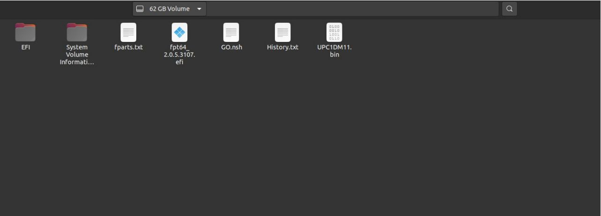
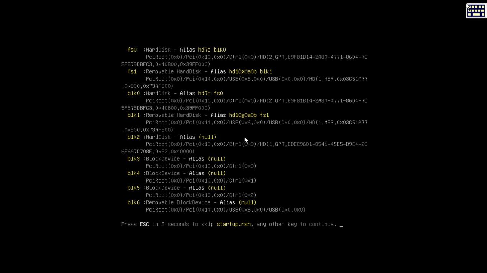
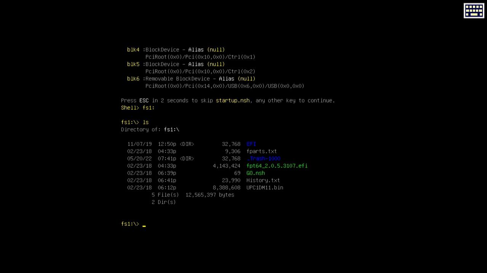
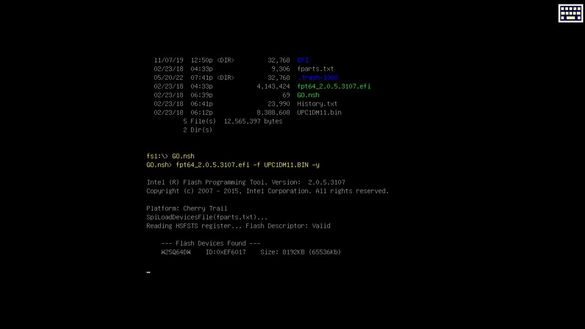

BIOS
What's it?
BIOS is a firmware that initializes and configures hardware components of a computer system during the boot process. It also provides basic functions and services that the operating system and other software can use to interact with the hardware. Users can modify BIOS settings through a configuration interface.
UpBoard Network Stack's problem
To utilize the cluster communication feature, it is necessary to update the BIOS version of our UpBoard model, as the current version is not up to date. Updating the BIOS will enable the Network Stack function and ensure its proper functioning.
Network Stack
Network Stack allows the PXE boot PXE through our connected network, and from PXE server, we can enter with a client and start up a bootable OS image, for that, we need to enable the Network Stack function.
Updating UpBoard BIOS
For starting a process is necessary find a UEFI BIOS version compartible with our UpBoard model. After trying some UEFI BIOS versions and researching on internet, the only version that runned correctly was the UPC1DM11 UPC1DM11, which is a version for the UpBoard model described in the project and has Network Stack functions.
How to:
It's possible to see how to update the BIOS and some installations advices down below.
 The mentioned BIOS version (UPC1DM11) is compatible with two UpBoard versions, UpBoard with 2GB RAM and 4GB RAM.
The mentioned BIOS version (UPC1DM11) is compatible with two UpBoard versions, UpBoard with 2GB RAM and 4GB RAM.
You need to remove all USB devices, but the USB device that has the BIOS files.
What we are going to do
- Unziping the download files into a bootable USB drive.
- Turning on the board with the USB drive plugged.
- Selecting a boot through the shell loader.
- Entering into a directory in pendrive which has the BIOS file and update the batch.
- Rebooting the system.
Step by step
-
Installing BIOS into USB stick
- After the download, make sure to unzip in a way that all files can be seen, as you can see below: 
-
Updating System BIOS
- Starts UpBoard after connecting all necessary devices.
- Wait for displaying it: 
Search for the USB stick device. - In this case the device's label is fs1 - Open the device's content file and observates, and compare with the image below.

- Run the file GO.nsh by writing.
and click the button Enter .

- BIOS will start updating, at the end, the UpBoard will restart by itself. After rebooting you can extract the USB stick.